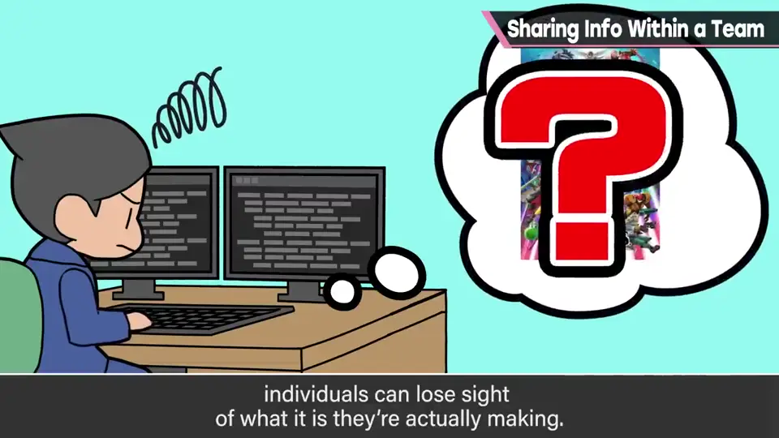
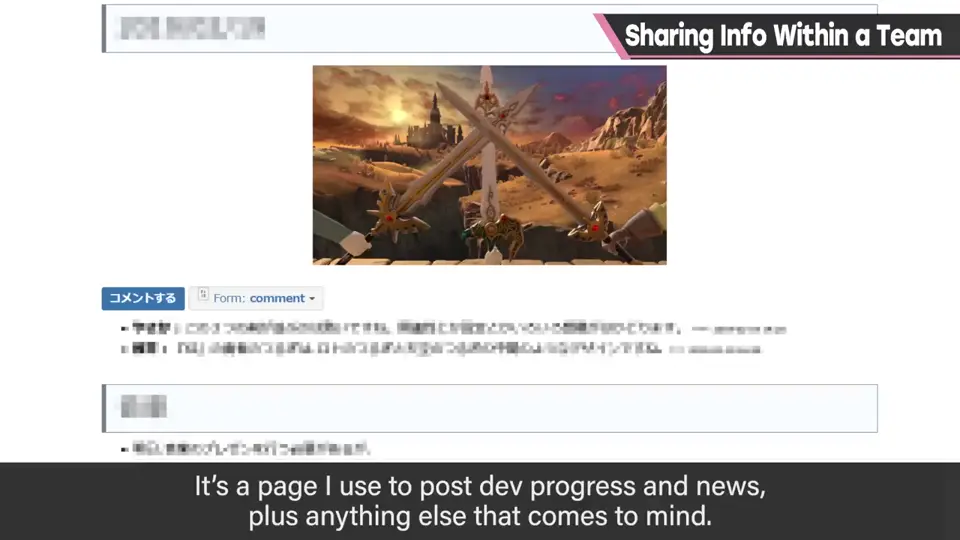
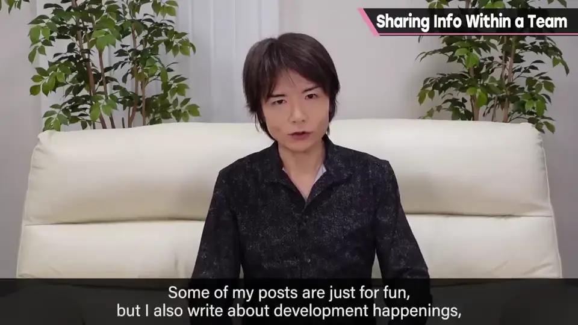
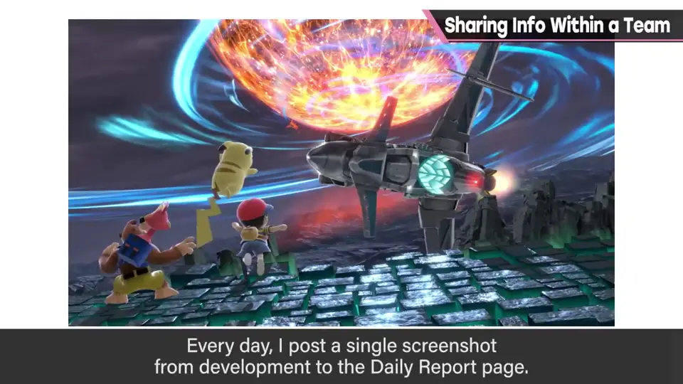
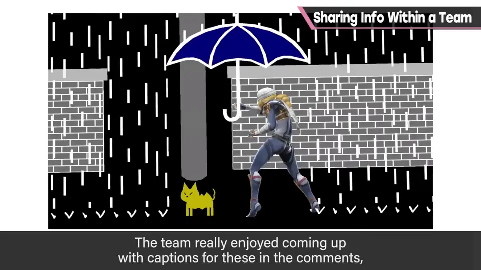
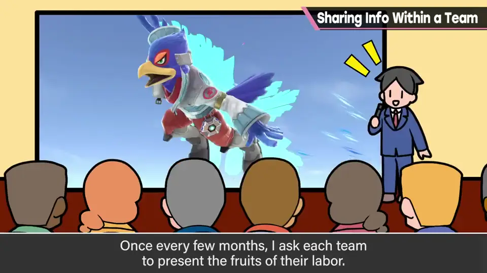
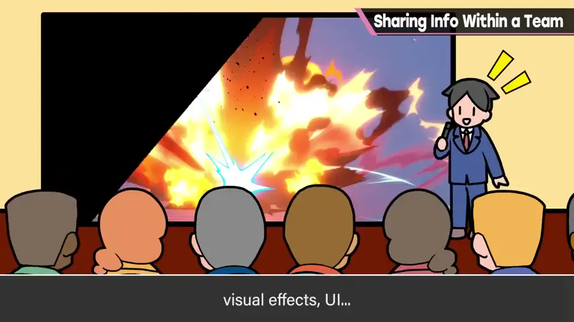

速览
「团队管理」这一分类主要讲让制作游戏的团队及其运营更顺利的话题——游戏是团队做的，这也很重要。尤其是大型游戏，每个人会渐渐不知道自己在做什么：比如只做汽车上一颗螺丝的人，很难想象这颗螺丝最终会变成载人奔跑的车。目的和全貌不清的工作是一种压力，樱井想尽量解决。他用三个办法让团队的信息通风：①内部页面：写开发进度、发生的事、他自己想到的杂事，带评论栏，员工之间可以交流；像新闻或报纸，对共享信息有效。②「今日一张」：在那个页面上每天贴一张开发中的截图（后来转用为 Twitter 上的「今日一张」），内部还包括不能对外公开的状态；员工常像大喜利一样加评论。③项目发表会：每几个月一次，请各类别（图形、声音、动作、特效、UI 等）在团队内发表完成的成果。协调日程、订会场很费劲，不容易举办，但效果绝佳：自己做的东西终将被很多人看到；由团队亲自发表，能让大家从单纯的制造性工作中获得更俯瞰的视角。总之，让团队内信息通风也能打破倦怠：工匠们一件件累积成果时，需要某种刺激和成就感。虽有一些成本，但全是好处——游戏不是一个人能做出来的。
1. 为什么需要信息共享 0:02
「团队管理」分类主要讲制作游戏的团队及其运营如何更顺利。游戏也是团队做出来的，所以这类话题也很重要。
特别是大型游戏，每个人会渐渐不知道自己到底在做什么。

比如只负责汽车上一颗螺丝的人，并不知道这颗螺丝用在哪，也难以想象它最终会变成载着人奔跑的车。
2. ① 内部进度页面 1:02
樱井用三个办法让团队「通风」。第一个是一个内部页面：写开发进度和发生的事，以及他自己想到的各种杂事。


页面有评论栏，员工之间可以交流。闲聊不算，开发中发生的事、他是怎么想的都写在上面，对信息共享很有效——有点像新闻或报纸。
3. ② 今日一张 1:32
第二个是「今日一张」：在那个页面上每天贴一张开发中的截图。后来它被转用为在 Twitter 上展开的「今日一张」。


不过内部的版本也包括开发中还不能公开的状态。员工常常像玩大喜利一样给截图加评论，成了一个小小的乐趣。
4. ③ 项目发表会 2:00
最后是项目发表会：每隔几个月，在团队内请各类别发表、展示完成的成果——比如图形、声音、动作、特效、UI。


协调日程、订会场太辛苦，不太容易举办，但效果超群。
5. 总结：打破倦怠 2:45
总之，让团队内的信息通风，在打破倦怠的意义上也很有效。工匠们一件件地累积成果，这时就想要某种刺激和成就感。
多少要付出一些成本，但全是好处。也在信息共享上努力吧——游戏不是一个人能做出来的。
自测题
1. 为什么樱井重视团队内的信息共享？
大型项目中个人容易看不清目的和全貌，这种工作有压力；共享信息还能打破倦怠。 0:26
2. 樱井用的三个办法是什么？
内部进度页面（带评论栏）、每日一张开发截图、每隔几个月的项目发表会。 1:02
3. 项目发表会好在哪里？
由团队亲自发表成果，能从单纯制造的工作中获得更俯瞰的视角，并带来刺激与成就感。 2:30